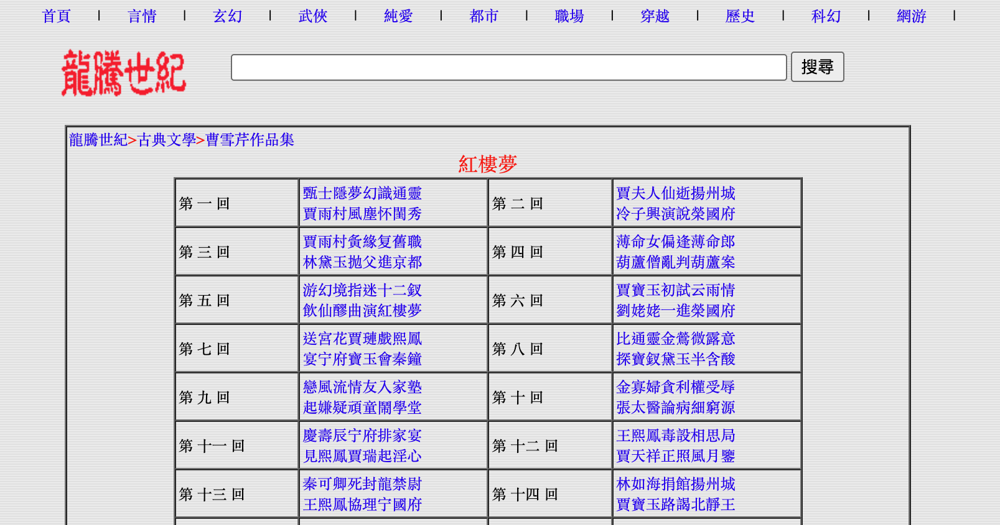
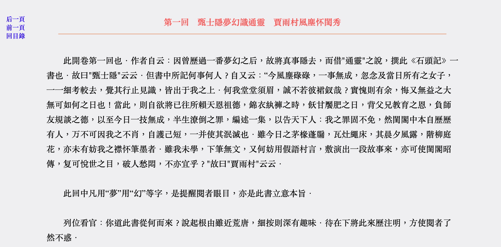

Weeks 8 & 9: Building a corpus from literature sources
1 Building your own corpus again: What you need to know
These two weeks are dedicated to building your corpus covering books from the classic Chinese literature. You may have one question in mind: Why not just using the codes written in Weeks 6 and 7 one more time? Or maybe you are asking yourself whether it is better to redo everuthing from the start. The actual answer is somewhere in between.
Think about it
Please try to recall what we learned in Weeks 6 and 7, and you will easily understand why the answer is somewhere in between:
We wrote the code based on the structure of a specific webpage. But the structure of other websites is very likely to be different. Therefore, it is impossible to use the exact same code!
But we can use the same mindset and protocol. It is therefore possible to use the same code, but to adapt the parameters to the new website. we want to use.
For these two weeks, we are going to use the website called “millionbook” (or in Chinese, 龍勝世紀), where we can find quite a number of books that are HTML-encoded. The website can be accessed here: https://millionbook.net/.
2 Document your own manual steps
2.1 What is the task
Again, you need to be very clear about what you want to do, and the best way is to start with manually annotating what you want to do.
So here is your task:
Go to the website, and search for the section related to classic Chinese literature. Then act as if you wanted to copy and paste the content of one book, of a second bool, etc.
Describe each step you take to get to the chapters/sections of a book, and document the changes that happen regarding the address of the website.
2.2 Documentation of the manual steps
Accessing the individual books
First, you went to the website by clicking on the link, and you looked for the relevant section. Then, you selected one book, and you picked the first chapter. You copied and pasted in a Word or Excel document. Third, you repeated this action with the other chapters, and once you completed the first book, you continued with the second one, third one, etc.
This procedure looks like this:
Now you can try one more time and pay more attention to the web address, and track the changes that occur, as you did in Weeks 6 and 7. You will remark that while the changes make sense (use of the first letter of the romanization of the name of the authors), but it is not an easy task to predict these by yourself.
We have to use an alternative method. If you recall the steps we went through in the past two weeks, we know that the web address of the individual books and chapters must be somewhere on the website… but where? Again, this is the moment when it is important to understand the structure of the website.
2.3 More about the structure of the website
We are clear about the task now: We want to get the data from classic Chinese books. We could start with the original link of the website, and try to find the link to the webpage by parsing the pages one by one. But sometimes, it is just easier to go manually, so we will directly start from the page listing all the classic Chinese books: https://millionbook.net/gd/gdxs.html.
The real game begins: How to find the links to the webpages of the individual books? We know from our manual check in the previous section that we cannot really guess the links. So we have no choice but to look at the structure of the website.
Do you remember how to access the structure of the website?
This is the same step as in Weeks 6 and 7 described here.
Once you accessed the structure of the webpage, it is time to play hide and seek and look for one book, let’s sat the first one: 紅樓夢 (Dream of the Red Chamber). You will find these lines:
<TR>
<TD WIDTH="33%" class="tt1">
<A HREF="c/caoxueqing/hlm/index.html" >紅樓夢</A>(曹雪芹)
</TD>
<TD WIDTH="33%" class="tt1">
<B>
<A HREF="l/luoguanzhong/index.html" >羅貫中文集</A>
</B>
</TD>
<TD WIDTH="33%" class="tt1">
<A HREF="s/shinaian/shz/index.html" >水滸傳</A>(施耐庵)
</TD>
</TR>
Pay attention
Each website has its own organization, and here you have an example:
Some HTML codes are written in capital letters, but this is not relevant to scrape the data
The links to the individual books are shorten, which means that we will have to recreate them
The structure is not always consistent, so we need to keep this in mind during the scraping process
The most challenging part here is the fact the the links are shorten. If you click on them, you actually obtain something like that:
https://millionbook.net/gd/c/caoxueqing/hlm/index.htmlThis will be an additional step to add in the code.
Accessing the individual chapters
Let’s access the first book with the link above. The website looks like that:

<tr>
<td>第 一 回 </td>
<td>
<a href="001.htm" >甄士隱夢幻識通靈 </a>
<br>
<a href="001.htm" >賈雨村風塵怀閨秀 </a>
</td>
<td>第 二 回 </td>
<td>
<a href="002.htm" >賈夫人仙逝揚州城 </a>
<br>
<a href="002.htm" >冷子興演說榮國府</a>
</td>
</tr>The <tr> and <td> elements are here to create the table. <br> means “go to the next line”, and this is why the titles of the chapters are on two lines on the website.
But you will remark two things when observing the links:
Again, they are shorten. If you click on them, you actually have something like that: https://millionbook.net/gd/c/caoxueqing/hlm/001.htm. So we know that this is another link we will have to reconstruct. The good news is that this is very predictable.
The same links appear two times. This will require extra work when writing the code, but we already encountered the same problem in the past two weeks. So nothing impossible to do!
Accessing the content of the chapter
Let’s click on the link to Chapter 1, and let’s have a look at the webpage:

We have here:
The title of the chapter in red
The text of the chapter in black
Three links leading to the previous chapter, the next chapter and the table of contents in blue
Again, let’s look at the structure of the website:
<TD class="tt2" bgcolor="#F1F1F3" width="84%">
<center>
<FONT style="FONT-SIZE: 12pt" COLOR="#FF5555">
<B>第一回 甄士隱夢幻識通靈 賈雨村風塵怀閨秀
</B>
</center>
</FONT>
<hr color="#EE9B73" size="1" width="94%">
<BR>
此開卷第一回也．作者自云：因曾歷過一番夢幻之后，故將真事隱去，而借"通靈"之說，撰此《石頭記》一書也．故曰"甄士隱"云云．但書中所記何事何人？自又云：“今風塵碌碌，一事無成，忽念及當日所有之女子，一一細考較去，覺其行止見識，皆出于我之上．何我堂堂須眉，誠不若彼裙釵哉？實愧則有余，悔又無益之大無可如何之日也！當此，則自欲將已往所賴天恩祖德，錦衣紈褲之時，飫甘饜肥之日，背父兄教育之恩，負師友規談之德，以至今日一技無成，半生潦倒之罪，編述一集，以告天下人：我之罪固不免，然閨閣中本自歷歷有人，万不可因我之不肖，自護己短，一并使其泯滅也．雖今日之茅椽蓬牖，瓦灶繩床，其晨夕風露，階柳庭花，亦未有妨我之襟怀筆墨者．雖我未學，下筆無文，又何妨用假語村言，敷演出一段故事來，亦可使閨閣昭傳，复可悅世之目，破人愁悶，不亦宜乎？"故曰"賈雨村"云云．
<BR>
<BR>
此回中凡用“夢”用“幻”等字，是提醒閱者眼目，亦是此書立意本旨．
<BR>
<BR>
列位看官：你道此書從何而來？說起根由雖近荒唐，細按則深有趣味．待在下將此來歷注明，方使閱者了然不惑．
</TD>There are many things to unpack here:
You will remark that the text as within a <td></td> element, and its “class” is “tt2”
Within this element, you have:
<center> and <font> elements (not very well organized), and these correspond to the title in red
an <hr> element, which correspond to the orange line between the title and the main text
the <br> element one more time
and finally the main text, without specific class
Think about it
The text is therefore directly within the <td> element called “tt2”. So this is the only way to access the text… but the title is also within this element!
This means that we have no choice but scraping the title of the chapter as well. This is important to note such details as we will have to handle them when preprocessing the data.
3 Scraping the data with R
In the previous sections, we clarified how to access the texts we are interested in, and we documented the challenges we will encounter. Now we are ready to let R do the job for us!
First, you can download the script here, and follow the steps below to understand how it works.
[Disclaimer: The explanation of the R codes is made by Gemini as an illustration of the use of such tools to decode a script.]
This R Markdown script is a web scraper designed to download the full text of Chinese classic literature from the website millionbook.net. It first finds all the book index pages, then finds all the chapter pages for each book, and finally scrapes the text from every chapter, saving the combined text into a single dataset.
3.1 Prepare the environment
This initial chunk loads all the necessary R packages (libraries) required for the script to run.
library(rvest): The main package for web scraping. It’s used to read HTML web pages and extract information from them.
library(dplyr): A powerful data manipulation package. It’s used here for its %>% (pipe) operator, which makes the code more readable by chaining commands together, and for functions like subset.
library(xml2): A package that rvest depends on to parse and handle the underlying HTML and XML data.
library(openxlsx): Used in the final step to save the scraped data as a .xlsx Excel file.
library(stringr): A package for working with text (strings). It’s used here for functions like str_detect (to check if a URL contains “.jpg” or “index.html”) and gsub (to modify URLs).
Here is an explanation of the R code from your file, broken down by each section.
3.2 Scraping
This section is the core of the script, performing the actual data extraction from the website.
List the URLs of the Chinese classic books
PageUrl <- "https://millionbook.net/gd/gdxs.html"
PageClassChinLit <- read_html(PageUrl)
ListBooks <- PageClassChinLit %>%
html_nodes(".tt1") %>%
html_text()
ListBooks <- ListBooks[-c(90)] # Remove blank one
ListURL <- PageClassChinLit %>%
html_nodes(".tt1") %>%
html_nodes("a") %>%
html_attr("href")
ListBooks <- as.data.frame(ListBooks)
ListBooks$ListURL <- paste0("https://millionbook.net/gd/", ListURL)
## Check if books finish with "index.html"
ListBooks$has_index <- str_detect(ListBooks$ListURL, "index.html")
## Remove books without index (other scraping process)
ListBooks$has_index <- as.factor(ListBooks$has_index)
ListBooks <- droplevels(subset(ListBooks, has_index == TRUE))
rownames(ListBooks) <- NULLThis part gets the list of all available books from the main classical literature index page.
PageUrl <- "...": Sets the target URL to the main index page.read_html(PageUrl): Downloads the HTML content of that page.html_nodes(".tt1"): Selects all HTML elements that have the CSS class “tt1”. Based on the code, these elements contain the book titles.html_text(): Extracts the plain text (the titles) from those elements.ListBooks[-c(90)]: Removes the 90th item, which the author noted was a blank entry.html_nodes("a") %>% html_attr("href"): This finds the<a>(link) tags within the “.tt1” elements and extracts theirhrefattribute (the actual URL, e.g., “book_name/index.html”).ListBooks <- as.data.frame(ListBooks): Converts the list of titles into a data frame.paste0(...): Creates full, absolute URLs by combining the base URL (https://millionbook.net/gd/) with the relative URLs (e.g., “book_name/index.html”) extracted earlier.str_detect(...)&subset(...): This is a data cleaning step. The code checks which URLs end in “index.html” (which are assumed to be book-level index pages) and removes any that don’t, ensuring the list only contains valid books to scrape.
Retrieve the URLs of the chapters of a book
This section digs one level deeper. It goes into each book’s index page to find the URLs for all of its chapters.
One page to test
IndBook <- read_html(ListBooks$ListURL[81])
ChapterURL <- IndBook %>%
html_nodes("td") %>%
html_nodes("a") %>%
html_attr("href")
ChapterURL <- ChapterURL[-c(1, 2, 3)]
print(ChapterURL)
ChapterURL <- unique(ChapterURL)
print(ChapterURL)
## Reconstruct the full URL
TempBookURL <- gsub("index.html", "", ListBooks$ListURL[81])
FullChapterURL <- paste0(TempBookURL, ChapterURL)
print(FullChapterURL)This chunk is a test run on a single book (ListBooks$ListURL[81]) to make sure the logic works before applying it to all books.
read_html(...): Downloads the HTML for one book’s index page.html_nodes("td") %>% html_nodes("a") %>% html_attr("href"): Finds all links (<a>) that are inside table cells (<td>) and gets their URLs. This is how the chapter list is structured on that page.ChapterURL <- ChapterURL[-c(1, 2, 3)]: Removes the first three links, which are likely navigation links (e.g., “Home,” “Back”) and not chapters.unique(ChapterURL): Removes any duplicate chapter links.gsub(...)&paste0(...): This reconstructs the full chapter URLs. It takes the book’s URL (e.g.,.../book_name/index.html), removes the “index.html” part to get a base directory, and then appends the specific chapter file (e.g.,001.html) to it.
Find the URLs of the chapters from all the books
URL_BookChapters_total <- data.frame(matrix(ncol = 1, nrow = 0))
for (i in 1:length(ListBooks$ListURL)){
IndBook <- read_html(ListBooks$ListURL[i])
ChapterURL <- IndBook %>%
html_nodes("td") %>%
html_nodes("a") %>%
html_attr("href")
ChapterURL <- ChapterURL[-c(1, 2, 3)]
ChapterURL <- unique(ChapterURL)
TempBookURL <- gsub("index.html", "", ListBooks$ListURL[i])
FullChapterURL <- paste0(TempBookURL, ChapterURL)
URL_BookChapters <- (data.frame(ChapterURL = FullChapterURL,
Book = ListBooks$ListBooks[i]))
URL_BookChapters_total <- rbind(URL_BookChapters_total, URL_BookChapters)
}
## Remove links to images (.jpg)
## Check if books finish with "index.html"
URL_BookChapters_total$image <- str_detect(URL_BookChapters_total$ChapterURL, ".jpg")
URL_BookChapters_total$image <- as.factor(URL_BookChapters_total$image)
URL_BookChapters_total <- droplevels(subset(URL_BookChapters_total, image != TRUE))
rownames(URL_BookChapters_total) <- NULLThis part applies the logic from the test (2.2.1) to every book found in section 2.1.
URL_BookChapters_total <- data.frame(...): Creates an empty data frame to store all the chapter URLs from all books.for (i in 1:length(ListBooks$ListURL)): A loop that iterates through each book URL.Inside the loop, it repeats the exact same logic from 2.2.1 (read page, find links, clean, create full URLs).
URL_BookChapters <- (data.frame(...)): Creates a small data frame for the current book’s chapters, helpfully including the book’s title.rbind(...): Appends this small data frame to the mainURL_BookChapters_totaldata frame.Post-loop Cleaning: After the loop finishes,
str_detectis used to find and remove any links that mistakenly point to.jpgimage files instead of text chapters. The comments note that inconsistent site structure for a few books caused issues, which this cleaning step helps fix.
Scrape the content of the chapters
This is the final scraping step, where the script visits every single chapter URL and downloads the actual text.
Test with one page
Chapter <- data.frame()
j = 3672
OneChapter <- read_html(URL_BookChapters_total$ChapterURL[j])
ChapterContent <- OneChapter %>%
html_nodes(".tt2") %>%
html_text()
ChapterTitle <- sub("\r.*", "", ChapterContent)
Chapter <- (data.frame(Book = URL_BookChapters_total$Book[j],
Title = ChapterTitle,
Content = ChapterContent,
URL = URL_BookChapters_total$ChapterURL[j]))
head(Chapter)Again, this is a test on a single chapter (j = 3672) to finalize the logic.
read_html(...): Downloads the HTML for one chapter page.html_nodes(".tt2") %>% html_text(): Selects the HTML element with the class “tt2” (where the main content is stored) and extracts all the text from it.sub("\r.*", "", ChapterContent): A clever trick to get the title. It assumes the title is the very first line of the text. This command finds the first carriage return (\r, a line break) and removes everything after it, leaving just the first line.data.frame(...): Organizes the scraped data (Book, Title, Content, URL) into a data frame.
Scrape all the chapters for all book
Book_total <- data.frame()
for (j in 1:length(URL_BookChapters_total$ChapterURL)){
tryCatch({
OneChapter <- read_html(URL_BookChapters_total$ChapterURL[j])
ChapterContent <- OneChapter %>%
html_nodes(".tt2") %>%
html_text()
ChapterTitle <- sub("\r.*", "", ChapterContent)
Chapter <- (data.frame(Book = URL_BookChapters_total$Book[j],
Title = ChapterTitle,
Content = ChapterContent,
URL = URL_BookChapters_total$ChapterURL[j]))
Book_total <- rbind(Book_total, Chapter)
# Update the progress
percentage_completed <- round(j/length(URL_BookChapters_total$ChapterURL) * 100, 2)
cat(c("Process", j, "out of", length(URL_BookChapters_total$ChapterURL), "percentage completed:", percentage_completed, "%", "\n"))
}, error=function(e){cat("ERROR :",conditionMessage(e), "\n")})
}
head(Book_total)This loop executes the final scraping.
Book_total <- data.frame(): Creates a new empty data frame to store the final content.for (j in 1:length(URL_BookChapters_total$ChapterURL)): A loop that iterates through every single chapter URL collected in section 2.2.2.tryCatch({...}, error=...): This is a very important safety feature. It “tries” to run the scraping code inside{...}. If any error occurs (e.g., a broken link, a network timeout), theerror=...function will catch it, print an error message, and continue to the next iteration of the loop. Without this, the entire script would crash on a single bad link.Inside the
tryCatch, it repeats the logic from 2.3.1 (read page, get text, extract title).rbind(...): Appends the new chapter’s data to theBook_totaldata frame.cat(...): Prints a progress message to the console so the user can see how far along the script is.
3.3 Save the data
After the main loop has finished collecting all the text, this final section saves the complete dataset.
Save as an Excel file:
write.xlsx(Book_total, ...)saves the entireBook_totaldata frame into an Excel file named “ClassicChineseLiterature_CorpusCourse.xlsx”.Save as an RData file:
save(Book_total, file = ...)saves the data frame in R’s native.Rdataformat. This format is much faster to load back into R for future analysis.
4 Markdown document, PDF output file, RData and Excel files of the scraped data
You can find the pre-filled Markdown document of this section here. Here is the PDF output of the same document.
The RData output file can be downloaded here. The Excel file corresponding to this dataset is here.